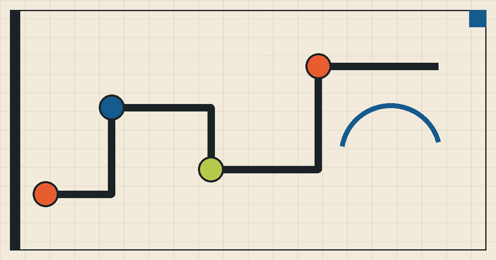

FIELD PROTOCOL / 公共生活
__PROTOCOL_TITLE__
__PROTOCOL_DESCRIPTION__
__PROTOCOL_DECK__
- 01
__PROTOCOL_SECTION_1_TITLE__
__PROTOCOL_SECTION_1_BODY__
- 02
__PROTOCOL_SECTION_2_TITLE__
__PROTOCOL_SECTION_2_BODY__
- 03
__PROTOCOL_SECTION_3_TITLE__
__PROTOCOL_SECTION_3_BODY__
- 04
__PROTOCOL_SECTION_4_TITLE__
__PROTOCOL_SECTION_4_BODY__
- 05
__PROTOCOL_SECTION_5_TITLE__
__PROTOCOL_SECTION_5_BODY__
| __PROTOCOL_COLUMN_ONE__ | __PROTOCOL_COLUMN_TWO__ | __PROTOCOL_COLUMN_THREE__ |
|---|---|---|
| __PROTOCOL_CELL_ONE__ | __PROTOCOL_CELL_TWO__ | __PROTOCOL_CELL_THREE__ |